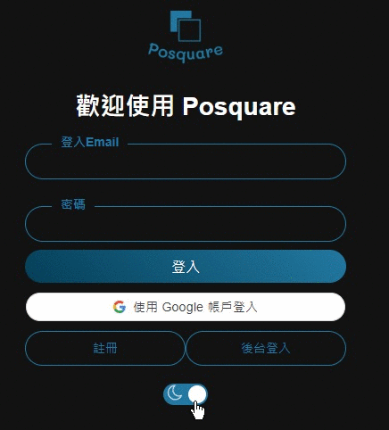
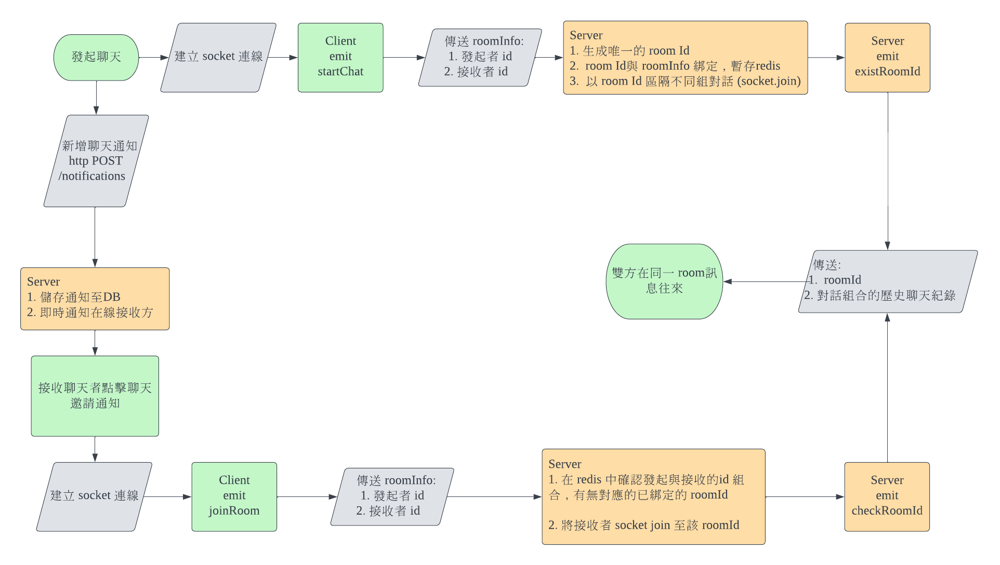
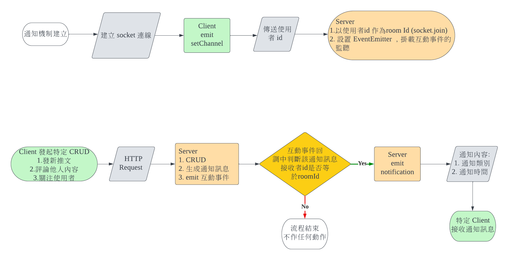

Posquare 專案作品介紹
大綱
- 整體運作架構
- 功能與實現方式
- 專案程式碼架構
- 困難點與處理
- 結語
整體運作架構
功能與實現方式
專案實現功能一覽
- 註冊、登入
- 發文、評論、關注、圖影上傳或拍照上傳
- 多層評論延伸
- 無限滾動卷軸
- 日夜模式切換
- 即時聊天
- 即時通知
- LINEPAY 串接
- 後台功能-網站資料視覺化、資料導出
前端使用工具
- Vue 2
- vuex
- vue router
- socket.io-client
- chart.js / vue-chart.js
- sass
- axios
- jwt-decode
- date-fns
後端使用工具
- Express
- prisma
- cookie-parser
- jsonwebtoken
- cors
- bcrypt
後端使用工具
- helmet
- morgan、winston
- node-schedule
- nodemailer
- redis
- aws-sdk (s3、secrets manager 相關)
使用到的 AWS 服務
- S3
- Cloudfront
- Route 53
- Certificate Manager
- EC2
- RDS
- Secret Manager
前端路由組件劃分
資料庫設計

註冊與登入
註冊與登入
發文、評論、圖影上傳或拍照上傳
多層評論延伸
無限滾動卷軸
判斷 scrollTop + clientHeight >= scrollHeight - 緩衝值
日夜模式切換
- 追蹤 prefers-color-scheme: dark
- 額外一組樣式依照全局狀態決定是否套用到 <body>
即時聊天
即時通知
linepay 串接
linepay 支付影響功能
- 提升顯示優先度
- 聊天紀錄保存
後台功能-統計圖表、資料導出
後台功能-統計圖表、資料導出
專案程式碼架構
前端
後端
前端 RWD 設計
| <576px | 576px ~ 768px | >768px |
|---|---|---|